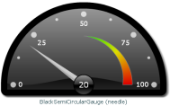

Gauge components
Note
This appendix sections describes how to create, modify
or enhance gauges based on MX technology available in earlier versions
of IBM® ILOG ElixirFor instructions about using Spark
gauge technology, in the current version of IBM® ILOG Elixir see:Gauges
IBM® ILOG Elixir Gauges help improve data visualization
applications by using gauges in the context of analysis and real-time
monitoring of data. IBM ILOG Elixir Gauges include predefined circular
and rectangular (horizontal and vertical) gauges, knobs, and dials,
as well as a dedicated framework to construct custom gauges.
Gauge components are interactive. You can edit the data
values displayed by the gauges using the mouse. Gauges also provide
customizable animations on data changes.
IBM ILOG Elixir provides predefined gauges and a framework for building custom gauges.
If you need to display a single value on a single scale
and if the layouts of the predefined gauges satisfy your requirements,
use or customize the predefined gauges. See Using and customizing predefined gauges.
If you need to display several values or scales, or need
to apply more advanced layouts to the gauge elements, use the Gauges
framework to build your own custom gauges. See Building custom gauges.
Predefined gauges
Predefined gauges are preconfigured Flex®
components which expose
a simple interface to the developer. They expose a single value on
a single scale with a predefined layout of the elements of the gauge.
For example, the predefined circular gauge displays a single value
on a circular scale and is configured by default with a single needle.
The following tables give an overview of the predefined
gauges: circular gauges, knobs, horizontal gauges, and vertical gauges.
Circular gauges
| SimpleCircularGauge | |||
|---|---|---|---|
| SimpleSemiCircularGauge | |||
| BlackCircularGauge | |||
| BlackSemiCircularGauge |  |
Knobs
| SimpleKnob | |
|---|---|
| BlackKnob |
Horizontal gauges
| SimpleHorizontalGauge | |||
|---|---|---|---|
| BlackHorizontalGauge |
Vertical gauges
| SimpleVerticalGauge | |||
|---|---|---|---|
| BlackVerticalGauge |  |
Custom gauges
IBM ILOG Elixir gauges rely on a generic gauges framework
which allows you to easily build custom MXML or ActionScript®
components representing
gauges. For example, a custom circular gauge can handle any number
of values displayed by several needles.
Predefined gauges may not satisfy all the use cases.
That is why, for specific needs, the IBM ILOG Elixir framework allows you to make custom gauges with an arbitrary number
of elements. Gauges defined with the framework are composite components
with interaction and animation. With this approach, there is no limitation.
A gauge is a set of elements with layout and configuration properties.
The geometry of all elements, such as scales or needles, is controlled
by properties which, most of the time, can be expressed as a percentage
so that the gauge scales correctly when resized.